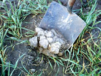

|
|
|
| For many years, soil was considered simply the loose fraction of the Earth's crust.
It was not until the 1880s, that soil was recognized as a natural body -
worthy of study in its own right - by the Russian scientist Dokuchaev.
Soil is a complex mixture of mineral matter, organic matter and living organisms.
Soil is a product of the environment; constantly changing, constantly evolving.
Soils develop over time, sometimes very slowly in dry desert areas or more
quickly in wet tropical regions. The soil is different from "powdered rock"
or "dirt" in that it supports life; in particular, the growth of plants.
Soil can be thought of as the "skin" of the land; without it the land would die. Like skin, the soil is constantly being eroded at its surface by wind, water and man's activities, and being renewed at its base by weathering of its parent material. Think of this important resource in three dimensions i.e. soil has depth as well as area.
Man's perception of soil differs according to the use of the soil.
We can apply the traditional sciences of physics, chemistry and biology to study soils. Many scientists have done this over the years. But emerging research is convincing us to change our approach. We are challenged to look at natural systems by thinking of changes and interactions with an integrated approach of all the sciences. Can we study a soil organism without taking into account its environment? Can we study a particle of soil without considering its neighbors in the same aggregate? Clearly, much more knowledge is to be gained if we open our eyes and step out of the barriers that traditional science teaching has created. The Soil Sciences of Physics, Chemistry and Biology attempt to do just this. While concentrating on physical, chemical or biological properties of soils, the interactions and dynamics are not forgotten.
|
|||
 Physical Properties Soils are a three phase system composed of solids, liquids and gases. The study of the physical behavior of these phases is called Soil Physics and includes: Although most of these properties are inherited from the soil's parent material, with some effort man can adjust some properties to improve or maintain the soil's fertility. The round top structure in the image is typical of a soil high in sodium salts. Crops growing on this soil will have great difficulty penetrating the subsoil with their roots. | |||

Chemical Properties Soil Chemistry studies the chemical characteristics of soil which depends on their mineral composition, organic matter and environment. Chemical reactions occur when substances either combine or break apart to form new substances with identifying properties that are different from the original substances. The reactions require energy of some kind (either a gain or loss). New substances may be formed when bonds between atoms or ions are formed, broken or when atoms are rearranged. Ions are atoms which are positively or negatively charged by either losing or gaining electrons. Ions with different charges have an attractive force for each other, while similarly charged ions repel one another. One example of a chemical reaction is hydrogen uniting with oxygen to form water. An understanding of soil chemistry is important in soil formation and fertility. How rocks and minerals breakdown and transform into new compounds is essential to our understanding of weathering and erosion. How mineral nutrients are transformed and bound in soil leads to better fertilization and soil testing techniques. The image is a thin section of soil parent material under a polarized microscope. Note the complex arrangement and size of minerals and the pore structures. Each mineral will have its own rate of solubility and resistance to weathering. For similar minerals, the smaller particles will dissolve faster than larger ones because of increased surface area (per unit mass) exposed to weathering processes. | |||
Biological Properties Soil Biology is the study of the living component of soils. Numerous bacteria, fungi, actinomycetes, worms, insects, small rodents and mammals inhabit the soil. Many of these organisms help in maintaining the fertility of the soil by decomposing plant and animal residues which recycle the nutrients. The interaction among various organisms is a fascinating subject in soil science. An example of this interaction is the association of bacteria with plants roots as shown in the image. Often, this association leads to the mutual benefits.
|
 Look at a section through the soil (soil profile) in a road cut.
Notice the several layers with different colors.
See how the depth of individual layers change from the top to bottom of hills. Why are the layers
thicker at the bottom of the hill?
Why is the top layer of soil the darkest?
Look at a section through the soil (soil profile) in a road cut.
Notice the several layers with different colors.
See how the depth of individual layers change from the top to bottom of hills. Why are the layers
thicker at the bottom of the hill?
Why is the top layer of soil the darkest?